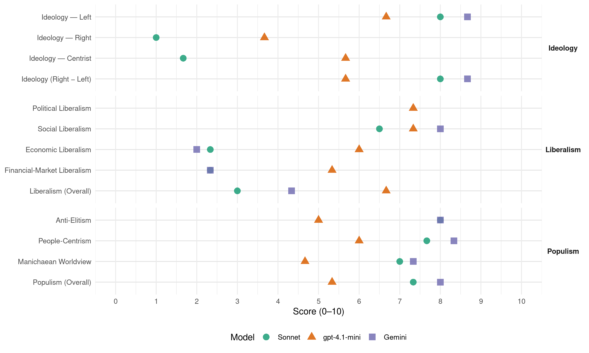

MAS-IPSP (Bolivia, 2014)
manifesto_id 151250_201410
Get full text: This site shows derived annotations and short verbatim quotes only. The full manifesto text is © Manifesto Project / WZB — obtain it via manifesto-project.wzb.eu using the manifesto_id above.
Headline scores
| Dimension | Sonnet | gpt-4.1-mini | Gemini |
|---|---|---|---|
| Populism (Overall) | 7.3 | 5.3 | 8.0 |
| Anti-Elitism | 8.0 | 5.0 | 8.0 |
| People-Centrism | 7.7 | 6.0 | 8.3 |
| Manichaean Worldview | 7.0 | 4.7 | 7.3 |
| Ideology (Right − Left) | 8.0 | 5.7 | 8.7 |
| Liberalism (Overall) | 3.0 | 6.7 | 4.3 |
| Political Liberalism | – | 7.3 | – |
| Social Liberalism | 6.5 | 7.3 | 8.0 |
| Economic Liberalism | 2.3 | 6.0 | 2.0 |
| Financial-Market Liberalism | 2.3 | 5.3 | 2.3 |
Evidence per dimension
Economic Liberalism
Gemini · score 2.0 · verified · chunk 1
“nacionalizamos los Hidrocarburos recuperando la propiedad, posesión y control total”
nacionalizamos los Hidrocarburos recuperando la propiedad, posesión y control total de los hidrocarburos y refundamos YPFB para operar toda la cadena
Gemini · score 2.0 · verified · chunk 2
“nacionalizando las empresas Colquiri, Vinto y Huanuni”
restableciendo el rol protagónico de nuestra empresa COMIBOL y nacionalizando las empresas Colquiri, Vinto y Huanuni.
Gemini · score 2.0 · verified · chunk 3
“subordinado a la lógica neoliberal”
de América Latina, es el resultado de la imposición de Estados Unidos… el viejo Estado estuvo subordinado a la lógica neoliberal
gpt-4.1-mini · score 7.0 · verified · chunk 1
“Estado fuerte que dirige la economía y sus procesos de planificación”
Cuando asumimos el gobierno, empezamos a fortalecer nuestro Estado, y al aprobarse la nueva Constitución Política del Estado, el pueblo le dio amplias funciones en la economía. Hoy, tenemos un Estado fuerte que dirige la economía y sus procesos de planificación.
gpt-4.1-mini · score 6.0 · verified · chunk 2
“apoyamos a la industria manufacturera con la intervención en complejos productivos y estrategias de priorización”
…Durante nuestra gestión, hemos apoyado a la industria manufacturera con la intervención en complejos productivos y estrategias de priorización; el resultado, fue la creación de 22 complejos productivos con intervención a nivel nacional. Asimismo se implementaron instrumentos alternativos de regulación de mercados…
gpt-4.1-mini · score 5.0 · verified · chunk 3
“modernización y desburocratización del Estado”
La modernización y desburocratización del Estado no ha ido al mismo ritmo que las transformaciones económicas y sociales alcanzadas por nuestro gobierno. Nuestro presidente Evo Morales Ayma, ha venido haciendo en los últimos años, esfuerzos significativos para garantizar el acceso universal a las Tecnologías de Información y Comunicaciones (TIC) para que todos los bolivianos podamos gozar de sus beneficios,
Sonnet · score 1.0 · verified · chunk 1
“El Estado dirige la economía y regula”
Hoy, tenemos un Estado fuerte que dirige la economía y sus procesos de planificación. Asimismo, ejerce la dirección y el control de los sectores estratégicos
Sonnet · score 3.0 · verified · chunk 2
“el contrabando y el libre comercio afectaron negativamente”
el contrabando y el libre comercio afectaron negativamente al desarrollo de la manufactura nacional
Sonnet · score 3.0 · verified · chunk 3
“liberalización de otras medidas de política comercial”
debían impulsar la liberalización de otras medidas de política comercial, como el régimen aduanero y la regulación a la inversión extranjera directa
Financial-Market Liberalism
Gemini · score 2.0 · verified · chunk 1
“otorgaron créditos para vivienda social por un valor de $us92,5 millones”
en el marco de la nueva Ley de Servicios Financieros, desde el primer semestre de 2014 las entidades financieras nacionales otorgaron créditos para vivienda social por un valor de $us92,5 millones, beneficiando a 2616 familias
Gemini · score 3.0 · verified · chunk 2
“entidades financieras nacionales otorgaron créditos para vivienda social”
en el marco de la nueva Ley de Servicios Financieros, desde el primer semestre de 2014 las entidades financieras nacionales otorgaron créditos para vivienda social por un valor de $us92,5 millones
Gemini · score 2.0 · verified · chunk 3
“arquitectura financiera mundial”
de las Naciones Unidas… Reforma de la arquitectura financiera mundial y reforma de las instituciones financieras
gpt-4.1-mini · score 6.0 · verified · chunk 1
“transformamos el sistema financiero, a fin de que éste acompañe la política social”
De igual manera, transformamos el sistema financiero, a fin de que éste acompañe la política social y productiva establecida por nuestro gobierno.
gpt-4.1-mini · score 6.0 · verified · chunk 2
“nueva Ley de Servicios Financieros, desde el primer semestre de 2014 las entidades financieras nacionales otorgaron créditos para vivienda social”
…Asimismo, en el marco de la nueva Ley de Servicios Financieros, desde el primer semestre de 2014 las entidades financieras nacionales otorgaron créditos para vivienda social por un valor de $us92,5 millones, beneficiando a 2616 familias sin contar el número de créditos refinanciados, en condiciones ventajosas para la población…
gpt-4.1-mini · score 4.0 · verified · chunk 3
“reforma de la arquitectura financiera mundial”
Reforma de la arquitectura financiera mundial y reforma de las instituciones financieras (Instituciones de Breton Woods).
Sonnet · score 1.0 · verified · chunk 1
“libre movilidad de capitales”
el llamado Consenso de Washington, que partía de la necesidad de dar respuesta a la disminución de la tasa de ganancia del capitalismo y a su apetito por mayores ganancias a través del libre comercio, la libre movilidad de capitales
Sonnet · score 3.0 · verified · chunk 2
“nueva Ley de Servicios Financieros, desde el primer semestre de 2014”
en el marco de la nueva Ley de Servicios Financieros, desde el primer semestre de 2014 las entidades financieras nacionales otorgaron créditos para vivienda social
Sonnet · score 3.0 · verified · chunk 3
“reforma de las instituciones financieras”
Reforma de la arquitectura financiera mundial y reforma de las instituciones financieras (Instituciones de Breton Woods).
Political Liberalism
Gemini · score 4.0 · mixed · chunk 1
“sin negar la democracia representativa, también ejercemos la democracia directa”
Nuestra revolución es democrática porque la victoria de nuestro instrumento político ha sido a través de las urnas, y porque nuestro objetivo estratégico es la consolidación de una democracia ampliada, de permanente deliberación y ejercicio del poder como instrumento de liberación del pueblo. Asimismo, es democrática porque en el marco de un pluralismo político, sin negar la democracia representativa, también ejercemos la democracia directa y comunitaria.
Gemini · score 5.0 · mixed · chunk 2
“Asamblea Constituyente con amplia participación social”
pese a todos los esfuerzos realizados desde el año 2006, con la instalación de una Asamblea Constituyente con amplia participación social, la aprobación de una nueva Constitución
Gemini · score 4.0 · mixed · chunk 3
“elección por voto directo”
la aprobación de una nueva Constitución Política del Estado, la elección por voto directo de las magistradas y magistrados
gpt-4.1-mini · score 8.0 · verified · chunk 1
“democracia ampliada, de permanente deliberación y ejercicio del poder”
Nuestra revolución es democrática porque la victoria de nuestro instrumento político ha sido a través de las urnas, y porque nuestro objetivo estratégico es la consolidación de una democracia ampliada, de permanente deliberación y ejercicio del poder como instrumento de liberación del pueblo.
gpt-4.1-mini · score 7.0 · verified · chunk 2
“Constitución Política del Estado, que establece el aprovechamiento responsable y planificado de los recursos naturales”
…La Constitución Política del Estado, que establece el aprovechamiento responsable y planificado de los recursos naturales, impulsando su industrialización, a través del desarrollo y del fortalecimiento de la base productiva en sus diferentes dimensiones y niveles, cuidando el medio ambiente para el bienestar de las generaciones actuales y futuras…
gpt-4.1-mini · score 7.0 · verified · chunk 3
“elección por voto directo de las magistradas”
con la instalación de una Asamblea Constituyente con amplia participación social, la aprobación de una nueva Constitución Política del Estado, la elección por voto directo de las magistradas y magistrados, el desarrollo de nueva normativa judicial y asignaciones extraordinarias de recursos, el objetivo de cambiar la justicia en nuestro país no ha sido alcanzado.
Sonnet · score 4.0 · mixed · chunk 1
“democracia representativa, también ejercemos la democracia directa”
en el marco de un pluralismo político, sin negar la democracia representativa, también ejercemos la democracia directa y comunitaria
Sonnet · score 5.0 · mixed · chunk 2
“elección por voto directo de las magistradas y magistrados”
la aprobación de una nueva Constitución Política del Estado, la elección por voto directo de las magistradas y magistrados
Sonnet · score 4.0 · mixed · chunk 3
“elección por voto directo de las magistradas”
la aprobación de una nueva Constitución Política del Estado, la elección por voto directo de las magistradas y magistrados, el desarrollo de nueva normativa judicial
Liberalism (Overall)
Gemini · score 4.0 · verified · chunk 1
“La Constitución Política del Estado reconoce y respeta toda forma de organización económica”
Que la revolución no respeta la propiedad privada. La Constitución Política del Estado reconoce y respeta toda forma de organización económica.
Gemini · score 5.0 · verified · chunk 2
“erradicar toda forma de discriminación, fundada en razón de sexo”
continuaremos fortaleciendo las políticas del Estado orientadas a erradicar toda forma de discriminación, fundada en razón de sexo, color, edad, orientación sexual
Gemini · score 4.0 · verified · chunk 3
“subordinado a la lógica neoliberal”
de América Latina, es el resultado de la imposición de Estados Unidos… el viejo Estado estuvo subordinado a la lógica neoliberal
gpt-4.1-mini · score 7.0 · verified · chunk 1
“democracia ampliada, de permanente deliberación y ejercicio del poder”
Nuestra revolución es democrática porque la victoria de nuestro instrumento político ha sido a través de las urnas, y porque nuestro objetivo estratégico es la consolidación de una democracia ampliada, de permanente deliberación y ejercicio del poder como instrumento de liberación del pueblo.
gpt-4.1-mini · score 7.0 · verified · chunk 2
“Constitución Política del Estado, que establece el aprovechamiento responsable y planificado de los recursos naturales”
…La Constitución Política del Estado, que establece el aprovechamiento responsable y planificado de los recursos naturales, impulsando su industrialización, a través del desarrollo y del fortalecimiento de la base productiva en sus diferentes dimensiones y niveles, cuidando el medio ambiente para el bienestar de las generaciones actuales y futuras…
gpt-4.1-mini · score 6.0 · verified · chunk 3
“elección por voto directo de las magistradas”
con la instalación de una Asamblea Constituyente con amplia participación social, la aprobación de una nueva Constitución Política del Estado, la elección por voto directo de las magistradas y magistrados, el desarrollo de nueva normativa judicial y asignaciones extraordinarias de recursos, el objetivo de cambiar la justicia en nuestro país no ha sido alcanzado.
Sonnet · score 3.0 · verified · chunk 1
“reemplazar al neoliberalismo y sus nefastas consecuencias”
trabajamos junto al pueblo boliviano en la construcción de un nuevo Estado y un nuevo modelo económico orientado a reemplazar al neoliberalismo y sus nefastas consecuencias
Sonnet · score 5.0 · mixed · chunk 2
“erradicar toda forma de discriminación, fundada en razón de sexo”
continuaremos fortaleciendo las políticas del Estado orientadas a erradicar toda forma de discriminación, fundada en razón de sexo, color, edad, orientación sexual
Sonnet · score 4.0 · mixed · chunk 3
“respetuoso de los derechos, principios y garantías constitucionales”
con un componente mucho más humano y social, respetuoso de los derechos, principios y garantías constitucionales, con pleno reconocimiento del pluralismo jurídico
Anti-Elitism
Gemini · score 8.0 · verified · chunk 1
“saqueo de nuestros recursos naturales con la mirada complaciente y cómplice de las clases sociales dominantes”
De esta manera, continuó el saqueo de nuestros recursos naturales con la mirada complaciente y cómplice de las clases sociales dominantes que detentaron el poder durante todo ese periodo
Gemini · score 8.0 · verified · chunk 2
“acumulando cada año en el periodo neoliberal”
calidad de la vivienda, que se ha ido acumulando cada año en el periodo neoliberal, por la falta de políticas públicas
Gemini · score 8.0 · verified · chunk 3
“un mero botín de los grupos”
corrupto e ineficiente, se había convertido además en un mero botín de los grupos que llegaban al poder.
gpt-4.1-mini · score 9.0 · verified · chunk 1
“la democracia, aún en su sentido liberal, estaba cada vez más separada del pueblo”
La democracia, aún en su sentido liberal, estaba cada vez más separada del pueblo. El voto de la ciudadanía no tenía importancia, pues el Congreso Nacional elegía a uno de los tres candidatos más votados, pero sin que ninguno de ellos se acercara a la barrera del 50 por ciento más uno.
gpt-4.1-mini · score 3.0 · verified · chunk 2
“la corrupción, crea un sistema de administración de Bienes Incautados”
…control de sustancias controladas; operativizar el sistema de control de la legitimación de ganancias ilícitas y delitos conexos; crear un sistema de administración de Bienes Incautados, que permita una acción efectiva contra la lucha contra la corrupción, crea un sistema de administración de Bienes Incautados, para su inversión en desarrollo social. Reducción de la Demanda: Implementar estrategias y programas de prevención del consumo de drogas y alcohol…
gpt-4.1-mini · score 3.0 · verified · chunk 3
“el poder judicial, corrupto e ineficiente”
En el periodo neoliberal la justicia era uno de los instrumentos de regulación de la vida social-económica con carácter selectivo, clasista, discriminatorio, excluyente, ineficiente y reproductor de relaciones desiguales de poder. Este poder judicial, corrupto e ineficiente, se había convertido además en un mero botín de los grupos que llegaban al poder.
Sonnet · score 9.0 · verified · chunk 1
“las clases explotadas y pueblos oprimidos”
En todas ellas, con excepción de la última crisis de Estado, las clases explotadas y pueblos oprimidos participamos de alguna manera, pero sólo como fuerza social y no como fuerza dirigente.
Sonnet · score 7.0 · verified · chunk 3
“periodo neoliberal la justicia era uno de los instrumentos”
En el periodo neoliberal la justicia era uno de los instrumentos de regulación de la vida social-económica con carácter selectivo, clasista, discriminatorio, excluyente
Ideology — Centrist
gpt-4.1-mini · score 8.0 · verified · chunk 1
“instrumento político más importante en la historia de nuestro país”
llegando a convertirse en el instrumento político más importante en la historia de nuestro país. Desde nuestra primera participación electoral nacional en 1997, cuando obtuvimos cuatro diputados, hasta 2002, cuando nos ubicamos como la segunda fuerza política a nivel nacional; nunca dejamos de combinar la lucha social y la lucha política.
gpt-4.1-mini · score 4.0 · verified · chunk 2
“participación comunitaria en todos los procesos educativos para la transformación social”
…Revolución democrático-social. Consiste en la participación comunitaria en todos los procesos educativos para la transformación social. Se concentrará en reducir los altos niveles de exclusión, inequidad, consolidando la participación y la responsabilidad social en la educación…
gpt-4.1-mini · score 5.0 · verified · chunk 3
“participación social”
con la instalación de una Asamblea Constituyente con amplia participación social, la aprobación de una nueva Constitución Política del Estado, la elección por voto directo de las magistradas y magistrados, el desarrollo de nueva normativa judicial y asignaciones extraordinarias de recursos, el objetivo de cambiar la justicia en nuestro país no ha sido alcanzado.
Sonnet · score 1.0 · verified · chunk 1
“empresarios patriotas, mujeres, hombres”
pueblos indígena originario campesinos, obreros, intelectuales, estudiantes, empresarios patriotas, mujeres, hombres, niñas y niños, jóvenes, adultos mayores, de toda Bolivia
Sonnet · score 2.0 · verified · chunk 2
“respondiendo de manera oportuna a las necesidades de la población”
respondiendo de manera oportuna a las necesidades de la población, a través de un mecanismo efectivo que fortalece la gestión nacional
Sonnet · score 2.0 · verified · chunk 3
“participación ciudadana”
Un Observatorio Plurinacional con participación ciudadana, realizara una calificación de los avances en Transparencia
Ideology — Left
Gemini · score 9.0 · verified · chunk 1
“construcción colectiva del Socialismo Comunitario”
donde cabemos todas y todos en la construcción colectiva del Socialismo Comunitario para el Vivir Bien. En el presente Programa de Gobierno
Gemini · score 9.0 · verified · chunk 2
“nacionalizamos los hidrocarburos, el Estado recupera la propiedad”
A partir del 1ro de mayo de 2006, año en el cual nacionalizamos los hidrocarburos, el Estado recupera la propiedad, posesión y control de los hidrocarburos.
Gemini · score 8.0 · verified · chunk 3
“paradigma del capitalismo”
lideran el cuestionamiento al paradigma del capitalismo y sus instrumentos de acción como la
gpt-4.1-mini · score 9.0 · verified · chunk 1
“redistribución del excedente y del ingreso”
El excedente económico es redistribuido especialmente entre las personas de escasos recursos, a través de transferencias (Bono Juancito Pinto, Bono Juana Azurduy y Renta Dignidad), inversión pública, incrementos salariales inversamente proporcionales, subvención cruzada, y otros.
gpt-4.1-mini · score 5.0 · verified · chunk 2
“distribución equitativa de la riqueza y los excedentes económicos para la erradicación de la extrema pobreza”
…A partir de 2006, nuestro proceso de cambio promueve la distribución equitativa de la riqueza y los excedentes económicos para la erradicación de la extrema pobreza y la disminución de las desigualdades. Así, con la recuperación de los recursos naturales y la redistribución de los ingresos…
gpt-4.1-mini · score 6.0 · verified · chunk 3
“clasista, discriminatorio, excluyente”
En el periodo neoliberal la justicia era uno de los instrumentos de regulación de la vida social-económica con carácter selectivo, clasista, discriminatorio, excluyente, ineficiente y reproductor de relaciones desiguales de poder.
Sonnet · score 10.0 · verified · chunk 1
“Anticapitalista. Nuestra lucha no sólo es contra el modelo neoliberal”
Anticapitalista. Nuestra lucha no sólo es contra el modelo neoliberal. Nuestra lucha es contra el capitalismo y todas sus formas de manifestarse en determinados momentos históricos.
Sonnet · score 7.0 · verified · chunk 2
“nacionalizamos los hidrocarburos, el Estado recupera la propiedad”
A partir del 1ro de mayo de 2006, año en el cual nacionalizamos los hidrocarburos, el Estado recupera la propiedad, posesión y control de los hidrocarburos
Sonnet · score 7.0 · verified · chunk 3
“imposición de Estados Unidos, de los gobiernos neoliberales”
es el resultado de la imposición de Estados Unidos, de los gobiernos neoliberales estrechamente vinculados con los intereses transnacionales
Ideology (Right − Left)
Gemini · score 9.0 · verified · chunk 1
“luchas antiimperialistas, anticolonialistas y anticapitalistas”
nuestra irrupción en la política tiene sus raíces en las luchas antiimperialistas, anticolonialistas y anticapitalistas de los movimientos sociales.
Gemini · score 9.0 · verified · chunk 2
“nacionalizamos los hidrocarburos, el Estado recupera la propiedad”
A partir del 1ro de mayo de 2006, año en el cual nacionalizamos los hidrocarburos, el Estado recupera la propiedad, posesión y control de los hidrocarburos.
Gemini · score 8.0 · verified · chunk 3
“paradigma del capitalismo”
lideran el cuestionamiento al paradigma del capitalismo y sus instrumentos de acción como la
gpt-4.1-mini · score 8.0 · verified · chunk 1
“instrumento político más importante en la historia de nuestro país”
llegando a convertirse en el instrumento político más importante en la historia de nuestro país. Desde nuestra primera participación electoral nacional en 1997, cuando obtuvimos cuatro diputados, hasta 2002, cuando nos ubicamos como la segunda fuerza política a nivel nacional; nunca dejamos de combinar la lucha social y la lucha política.
gpt-4.1-mini · score 4.0 · verified · chunk 2
“participación comunitaria en todos los procesos educativos para la transformación social”
…Revolución democrático-social. Consiste en la participación comunitaria en todos los procesos educativos para la transformación social. Se concentrará en reducir los altos niveles de exclusión, inequidad, consolidando la participación y la responsabilidad social en la educación…
gpt-4.1-mini · score 5.0 · verified · chunk 3
“participación social”
con la instalación de una Asamblea Constituyente con amplia participación social, la aprobación de una nueva Constitución Política del Estado, la elección por voto directo de las magistradas y magistrados, el desarrollo de nueva normativa judicial y asignaciones extraordinarias de recursos, el objetivo de cambiar la justicia en nuestro país no ha sido alcanzado.
Sonnet · score 10.0 · verified · chunk 1
“Socialismo Comunitario para el Vivir Bien”
construcción colectiva del Socialismo Comunitario para el Vivir Bien. En el presente Programa de Gobierno, como MAS-IPSP presentamos nuestra propuesta
Sonnet · score 7.0 · verified · chunk 2
“redistribución de los ingresos, se reactivó el motor de la demanda interna”
con la recuperación de los recursos naturales y la redistribución de los ingresos, se reactivó el motor de la demanda interna
Sonnet · score 7.0 · verified · chunk 3
“cuestionamiento al paradigma del capitalismo”
La filosofía del Vivir Bien y el respeto y la relación armónica con la Madre Tierra son dos conceptos que lideran el cuestionamiento al paradigma del capitalismo
Ideology — Right
gpt-4.1-mini · score 7.0 · verified · chunk 1
“bloque indígena originario campesino-obrero y popular”
dando lugar a la emergencia del bloque indígena originario campesino-obrero y popular. Actualmente, el MAS-IPSP ha logrado irradiar a nivel nacional e internacional, sus principios políticos de dignidad, soberanía y servicio al pueblo,
gpt-4.1-mini · score 2.0 · verified · chunk 2
“control territorial pleno: Espacio aéreo de zonas fronterizas y áreas con recursos naturales estratégicos”
…Ejercicio de la soberanía mediante el control territorial pleno: Espacio aéreo de zonas fronterizas y áreas con recursos naturales estratégicos Sistema de radares y de defensa. Transformación educativa de las fuerzas armadas en todos los niveles de formación…
gpt-4.1-mini · score 2.0 · verified · chunk 3
“Bloques antiimperialistas, por la soberanía”
Para lograr esta meta, impulsaremos acciones para la realización de: Bloques antiimperialistas, por la soberanía y defensa de los recursos naturales (petróleo, agua y otros). Bloques de Integración Regional de los pueblos y el desarrollo de mecanismos de comercio alternativo.
Sonnet · score 0.0 · verified · chunk 1
“antiimperialistas, anticolonialistas y anticapitalistas”
nuestra irrupción en la política tiene sus raíces en las luchas antiimperialistas, anticolonialistas y anticapitalistas de los movimientos sociales
Sonnet · score 1.0 · verified · chunk 2
“soberanía del nuevo Estado Plurinacional”
se recuperará la soberanía del nuevo Estado Plurinacional, asumiendo la política, estrategia y acciones desde nuestra propia nacionalidad
Sonnet · score 2.0 · verified · chunk 3
“retorno soberano al mar”
La estrategia para un retorno soberano al mar Esta estrategia se constituye en la actualidad y por mandato de la CPE en una política de Estado
Manichaean Worldview
Gemini · score 8.0 · verified · chunk 1
“las clases explotadas y pueblos oprimidos”
En todas ellas, con excepción de la última crisis de Estado, las clases explotadas y pueblos oprimidos participamos de alguna manera, pero sólo como fuerza social
Gemini · score 7.0 · verified · chunk 2
“supeditando el desarrollo tecnológico del país a los intereses de las empresas transnacionales”
fueron cerrados y abandonados, como el Instituto Boliviano de Tecnología Agropecuaria (IBTA) y el Centro de Investigaciones de YPFB, entre otros, supeditando el desarrollo tecnológico del país a los intereses de las empresas transnacionales y dejando una Bolivia atrasada
Gemini · score 7.0 · verified · chunk 3
“modo oscuro y arbitrario”
patrimonios personales, era una prueba clara del modo oscuro y arbitrario del manejo de los recursos públicos.
gpt-4.1-mini · score 8.0 · verified · chunk 1
“luchas antiimperialistas, anticolonialistas y anticapitalistas”
Por estas razones, nuestra irrupción en la política tiene sus raíces en las luchas antiimperialistas, anticolonialistas y anticapitalistas de los movimientos sociales. Es así como inauguramos una nueva historia de unidad política indígena originaria campesina,
gpt-4.1-mini · score 2.0 · verified · chunk 2
“corrupción, crea un sistema de administración de Bienes Incautados”
…control de sustancias controladas; operativizar el sistema de control de la legitimación de ganancias ilícitas y delitos conexos; crear un sistema de administración de Bienes Incautados, que permita una acción efectiva contra la lucha contra la corrupción, crea un sistema de administración de Bienes Incautados, para su inversión en desarrollo social. Reducción de la Demanda: Implementar estrategias y programas de prevención del consumo de drogas y alcohol…
gpt-4.1-mini · score 4.0 · verified · chunk 3
“cero tolerancia a la corrupción”
En 2009, creamos el Ministerio deTransparencia y Lucha contra la Corrupción con el mandato de “Cero tolerancia a la corrupción”. El 31 de marzo de 2010, nuestro gobierno promulga la Ley Nº 004, de Lucha Contra la Corrupción, Enriquecimiento Ilícito e investigación de Fortunas “Marcelo Quiroga Santa Cruz” que penaliza severamente los delitos de corrupción pública;
Sonnet · score 9.0 · verified · chunk 1
“imperialismo, capitalismo y colonialismo”
hicimos frente a las nefastas consecuencias del imperialismo, capitalismo y colonialismo en nuestro país
Sonnet · score 6.0 · verified · chunk 2
“la justicia era uno de los instrumentos de regulación”
En el periodo neoliberal la justicia era uno de los instrumentos de regulación de la vida social-económica con carácter selectivo, clasista, discriminatorio, excluyente
Sonnet · score 6.0 · verified · chunk 3
“poder judicial, corrupto e ineficiente”
Este poder judicial, corrupto e ineficiente, se había convertido además en un mero botín de los grupos que llegaban al poder.
People-Centrism
Gemini · score 9.0 · verified · chunk 1
“un instrumento político de liberación para el pueblo”
bajo el horizonte de construcción de un instrumento político de liberación para el pueblo, con el que hicimos frente a las nefastas consecuencias
Gemini · score 8.0 · verified · chunk 2
“participación comunitaria en todos los procesos”
Revolución democrático-social. Consiste en la participación comunitaria en todos los procesos educativos para la transformación social.
Gemini · score 8.0 · verified · chunk 3
“con participación del pueblo”
11.1. Revolución en la justicia con participación del pueblo En el periodo neoliberal la justicia era
gpt-4.1-mini · score 9.0 · verified · chunk 1
“la voluntad popular construimos nuestro instrumento político”
con la inquebrantable voluntad popular construimos nuestro instrumento político. Entre la proscripción digitada desde la embajada de Estados Unidos para que nuestra personería no sea reconocida por la Corte Nacional Electoral y la energía desplegada por nuestros pueblos, nacimos como Movimiento Al Socialismo – Instrumento Político por la Soberanía de los Pueblos (MAS-IPSP).
gpt-4.1-mini · score 4.0 · verified · chunk 2
“participación comunitaria en todos los procesos educativos para la transformación social”
…Revolución democrático-social. Consiste en la participación comunitaria en todos los procesos educativos para la transformación social. Se concentrará en reducir los altos niveles de exclusión, inequidad, consolidando la participación y la responsabilidad social en la educación…
gpt-4.1-mini · score 5.0 · verified · chunk 3
“participación social”
con la instalación de una Asamblea Constituyente con amplia participación social, la aprobación de una nueva Constitución Política del Estado, la elección por voto directo de las magistradas y magistrados, el desarrollo de nueva normativa judicial y asignaciones extraordinarias de recursos, el objetivo de cambiar la justicia en nuestro país no ha sido alcanzado.
Sonnet · score 9.0 · verified · chunk 1
“es un instrumento del pueblo”
Nuestro instrumento político, desde su nacimiento, ha ido de victoria en victoria y esto se debe a que es un instrumento del pueblo, es un instrumento incluyente, donde cabemos todas y todos
Sonnet · score 7.0 · verified · chunk 2
“respondiendo de manera oportuna a las necesidades de la población”
en su afán de profundizar la Revolución Democrática y Cultural, respondiendo de manera oportuna a las necesidades de la población
Sonnet · score 7.0 · verified · chunk 3
“participación del pueblo”
11.1. Revolución en la justicia con participación del pueblo En el periodo neoliberal la justicia era uno de los instrumentos
Populism (Overall)
Gemini · score 8.0 · verified · chunk 1
“un instrumento del pueblo, es un instrumento incluyente”
ha ido de victoria en victoria y esto se debe a que es un instrumento del pueblo, es un instrumento incluyente, donde cabemos todas y todos
Gemini · score 8.0 · verified · chunk 2
“acumulando cada año en el periodo neoliberal”
calidad de la vivienda, que se ha ido acumulando cada año en el periodo neoliberal, por la falta de políticas públicas
Gemini · score 8.0 · verified · chunk 3
“con participación del pueblo”
11.1. Revolución en la justicia con participación del pueblo En el periodo neoliberal la justicia era
gpt-4.1-mini · score 9.0 · verified · chunk 1
“luchas antiimperialistas, anticolonialistas y anticapitalistas”
Por estas razones, nuestra irrupción en la política tiene sus raíces en las luchas antiimperialistas, anticolonialistas y anticapitalistas de los movimientos sociales. Es así como inauguramos una nueva historia de unidad política indígena originaria campesina,
gpt-4.1-mini · score 3.0 · verified · chunk 2
“participación comunitaria en todos los procesos educativos para la transformación social”
…Revolución democrático-social. Consiste en la participación comunitaria en todos los procesos educativos para la transformación social. Se concentrará en reducir los altos niveles de exclusión, inequidad, consolidando la participación y la responsabilidad social en la educación…
gpt-4.1-mini · score 4.0 · verified · chunk 3
“el poder judicial, corrupto e ineficiente”
En el periodo neoliberal la justicia era uno de los instrumentos de regulación de la vida social-económica con carácter selectivo, clasista, discriminatorio, excluyente, ineficiente y reproductor de relaciones desiguales de poder. Este poder judicial, corrupto e ineficiente, se había convertido además en un mero botín de los grupos que llegaban al poder.
Sonnet · score 9.0 · verified · chunk 1
“clases dominantes que detentaron el poder”
continuó el saqueo de nuestros recursos naturales con la mirada complaciente y cómplice de las clases sociales dominantes que detentaron el poder durante todo ese periodo
Sonnet · score 6.0 · verified · chunk 2
“supeditando el desarrollo tecnológico del país a los intereses de las empresas transnacionales”
supeditando el desarrollo tecnológico del país a los intereses de las empresas transnacionales y dejando una Bolivia atrasada, rezagada y dependiente
Sonnet · score 7.0 · verified · chunk 3
“botín de los grupos que llegaban al poder”
Este poder judicial, corrupto e ineficiente, se había convertido además en un mero botín de los grupos que llegaban al poder.
Social Liberalism